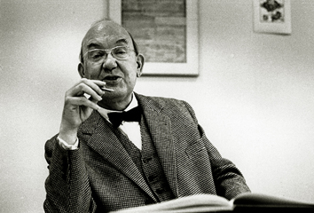
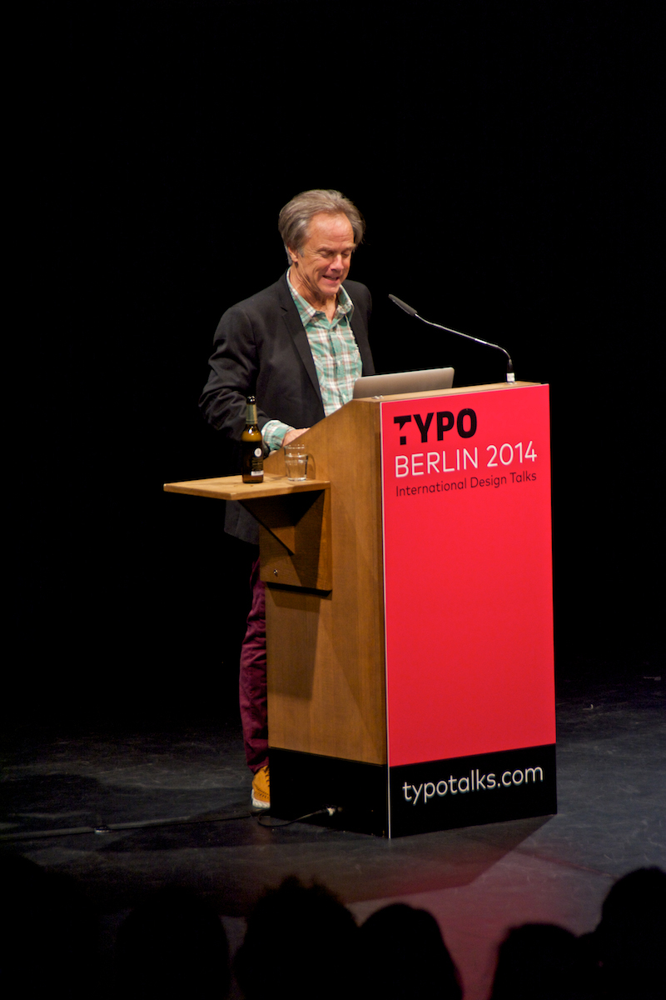

Assignment 1
—Bookstore
—Art
—Artists
—Salvador Dalí

—Dalí“The fact that I myself, at the moment of painting, do not understand my own pictures, does not mean that these pictures have no meaning; on the contrary, their meaning is so profound, complex, coherent, and involuntary that it escapes the most simple analysis of logical intuition.”
—Frida Kahlo

—Jean-Michel Basquiat

—Engineering
—Engineers
—Tim Berners-Lee

—Berners-Lee“Had the technology been proprietary, and in my total control, it would probably not have taken off. You can’t propose that something be a universal space and at the same time keep control of it.”
—Linus Torvalds

—Håkon Wium Lie
—Typography
—Typographers
—Neville Brody
—Brody“Design is more than a few tricks to the eye. It’s a few tricks to the brain.”
—Matthew Carter
—Jan Tschichold
—Design
—Designers
—David Carson
—Carson“Graphic design will save the world right after rock and roll does.”
—Susan Kare